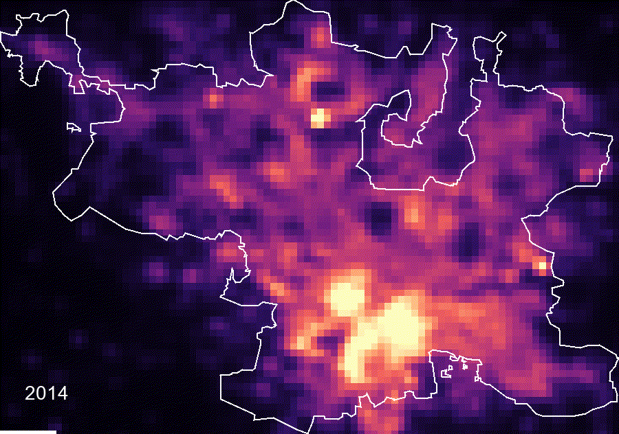
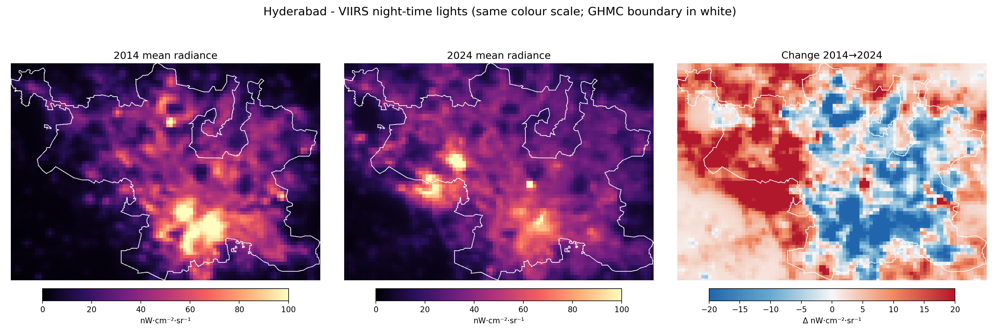
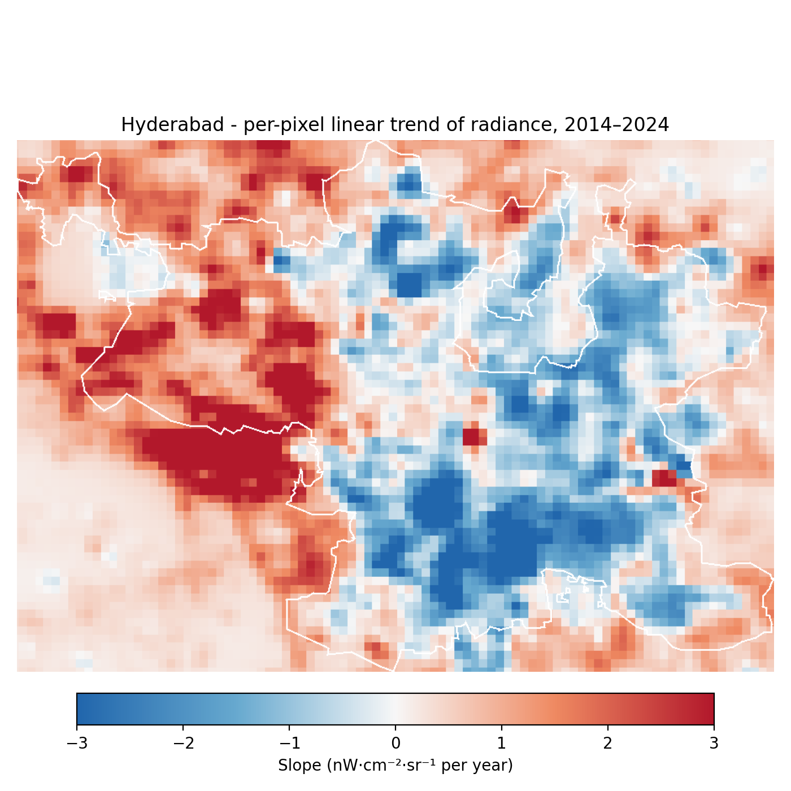

01 · Question & methodHow was it measured?
Question: how has annual mean night-time radiance changed across Hyderabad between 2014 and 2024, and where has it changed most?
- 1Data.
NOAA/VIIRS/DNB/MONTHLY_V1/VCMSLCFG(avg_rad,cf_cvg), ~464 m, monthly, via Google Earth Engine. - 2Boundary. DataMeet Municipal Spatial Data - GHMC area (OpenStreetMap-derived GeoJSON) (feature timestamp 2018-01-03T13:15:26Z; ≈ 611 km²). One fixed boundary is used for every year.
- 3Annual surface. Mean of monthly
avg_radwherecf_cvg> 0, negatives set to 0, at least 6 valid months per pixel; identical rule every year. - 4Consistency. One fixed colour scale (0–100 nW·cm⁻²·sr⁻¹) for every year and every map.
- 5Statistics. City mean / median / sum, OLS, Sen's slope, Mann–Kendall test, per-pixel trend, and a ±2 threshold for brightening / dimming area.
02 · Headline numbersKey results
03 · Dynamic outputAnnual radiance time slider
Drag the slider or press play. Every frame uses the same colour scale; the GHMC boundary is drawn in white.

Bars show the city mean for each year; click one to jump to that frame. The animated GIF version is below.


Drag left–right to compare the two end years.
04 · Numerical resultIs there a long-term trend?
City mean and median radiance by year with the OLS and Sen's-slope trend lines. Hover for values; click a point to jump the slider to that year.
| year | mean_radiance | median_radiance | sum_radiance | valid_months | pct_change_vs_2014 |
|---|---|---|---|---|---|
| 2014 | 37.242 | 35.537 | 111059.489 | 12 | 0.000 |
| 2015 | 38.478 | 35.496 | 114746.397 | 12 | 3.320 |
| 2016 | 37.642 | 34.537 | 112251.446 | 12 | 1.073 |
| 2017 | 35.543 | 32.508 | 105994.011 | 12 | -4.561 |
| 2018 | 33.759 | 29.502 | 100671.560 | 12 | -9.353 |
| 2019 | 33.562 | 30.235 | 100083.922 | 12 | -9.883 |
| 2020 | 30.901 | 28.273 | 92151.303 | 12 | -17.025 |
| 2021 | 32.788 | 30.255 | 97775.672 | 12 | -11.961 |
| 2022 | 35.873 | 33.733 | 106976.181 | 12 | -3.677 |
| 2023 | 38.196 | 35.481 | 113903.917 | 12 | 2.561 |
| 2024 | 36.972 | 34.470 | 110255.082 | 12 | -0.724 |
Radiance in nW·cm⁻²·sr⁻¹. sum_radiance is the pixel-value sum inside the boundary (not area-weighted) and is only meaningful for comparing years.
05 · Where did it change?Brightening vs dimming
Change = 2024 minus 2014, with a ±2 nW·cm⁻²·sr⁻¹ threshold. Rings are distances from the brightest pixel of the 11-year mean surface.
| class | area_km2 | share_% |
|---|---|---|
| Brightening (> +2) | 263.267 | 43.247 |
| Stable (±2) | 72.411 | 11.895 |
| Dimming (< -2) | 273.071 | 44.858 |
| zone | mean_2014 | mean_2024 | change | pct_change | share_brightening_% | share_dimming_% |
|---|---|---|---|---|---|---|
| 0–5 km | 71.625 | 55.680 | -15.945 | -22.262 | 5.430 | 88.254 |
| 5–10 km | 43.475 | 37.912 | -5.563 | -12.796 | 24.227 | 61.168 |
| 10–15 km | 31.479 | 32.468 | 0.989 | 3.140 | 44.904 | 40.868 |
| 15–20 km | 31.420 | 35.233 | 3.812 | 12.134 | 52.128 | 35.496 |
| 20+ km | 17.454 | 30.173 | 12.719 | 72.871 | 87.507 | 5.708 |
06 · MapsChange and trend surfaces


Interactive map
Layer control switches years, the change layer and basemap. Open full screen.
07 · InterpretationWhat does it mean?
Temporal pattern. City-mean radiance moved from 37.24 nW·cm⁻²·sr⁻¹ in 2014 to 36.97 in 2024 (-0.27, -0.7%). The highest annual mean is in 2015 and the lowest in 2020. The OLS slope is -0.147 per year (R² = 0.04); Sen's slope is -0.197 [-0.991, +0.536] and the Mann–Kendall test gives tau = -0.20 (p = 0.4454), so the monotonic trend is not statistically significant at the 5% level. With only 11 annual observations the test has limited power: a non-significant result means no detectable trend, not proof of no change.
Change surface. Using a ±2 nW·cm⁻²·sr⁻¹ threshold on the 2014→2024 difference, 263.3 km² (43.2%) of the city brightened, 72.4 km² (11.9%) stayed stable and 273.1 km² (44.9%) dimmed. The city mean can hide opposite changes in different parts of the city, so it should be read together with the change and trend maps.
Spatial pattern. The brightest pixel of the 2014–2024 mean surface (113 nW·cm⁻²·sr⁻¹) lies at about 17.356°N, 78.489°E. Radiance does not fall steadily with distance from this core: in 2024 the ring means are 0–5 km 55.7, 5–10 km 37.9, 10–15 km 32.5, 15–20 km 35.2, 20+ km 30.2. Between 2014 and 2024 the ring that changed most upward is 20+ km (+12.7) and the ring that changed most downward is 0–5 km (-15.9); the largest share of brightening pixels is in the 20+ km ring (88%). By compass quadrant relative to the core, NW changed most upward (+4.6) and NE most downward (-6.7). These figures describe the pattern in the maps; they do not by themselves explain it.
How to read this. Possible contributors to year-to-year variation include lighting-technology changes (for example LED conversion, to which VIIRS is less sensitive), reduced activity during the 2020 COVID-19 lockdowns, new development, and data issues such as cloud cover and sensor calibration. These are hypotheses, not findings of this analysis.
Limitations
VIIRS monthly composites are about 464 m, so small features are blurred and lit and unlit land are mixed in one pixel. Radiance reflects lighting and activity, not population or built-up area directly. Cloud cover reduces valid monthly observations (annual means require at least 6 valid months). Calibration differences, LED conversion and bright-pixel blooming can affect the trend. The boundary is a fixed, community-curated GHMC polygon whose vintage is stated above; the city's administrative extent has changed over time and may have been revised since this polygon was last updated, so check the current extent before generalising. The brightening/dimming classes compare only the two end years and depend on the ±2 threshold.
08 · SourcesData & credits
- NOAA VIIRS DNB Monthly Cloud-free Composites (VCMSLCFG), via the Earth Engine Data Catalog.
- Boundary: DataMeet Municipal Spatial Data - GHMC area (OpenStreetMap-derived GeoJSON).
- Basemaps: Esri World Imagery and Dark Gray (Esri, Maxar, Earthstar Geographics, DeLorme, NAVTEQ).
- Gorelick et al. (2017), Google Earth Engine: planetary-scale geospatial analysis for everyone.